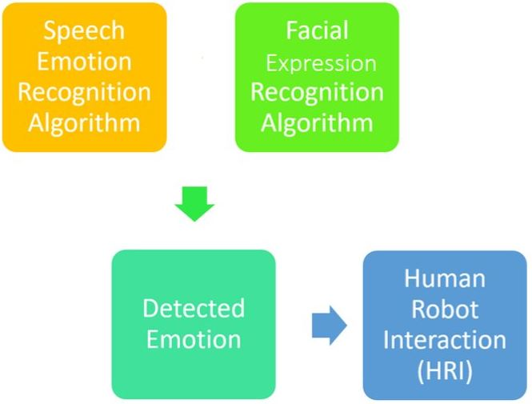
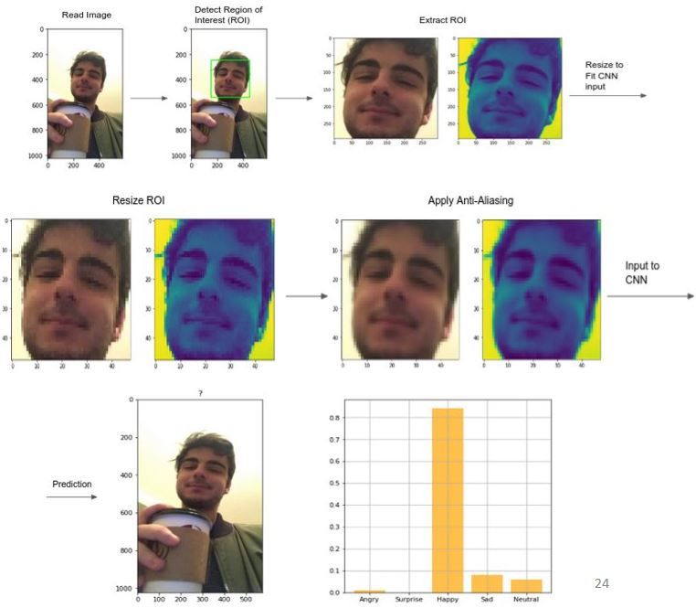
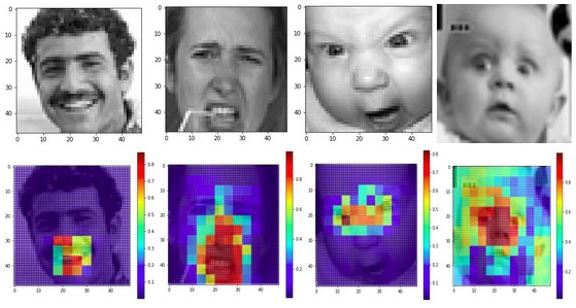
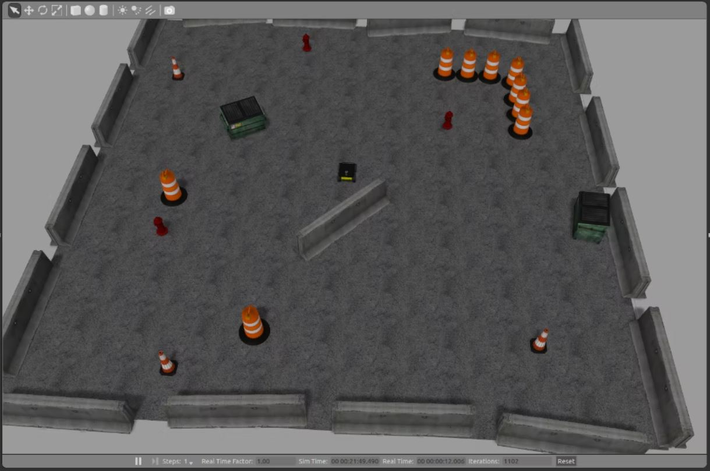
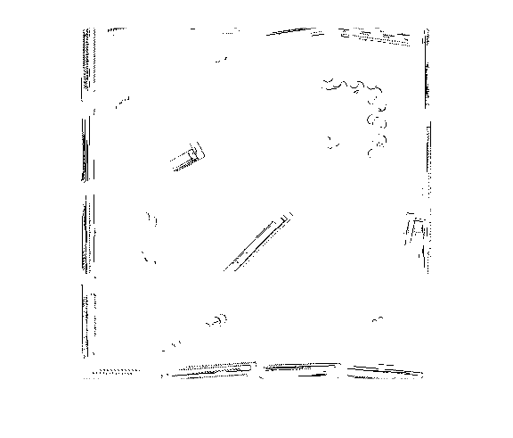

Alaa Abboud
⚙️ Welcome to my project portfolio!
On your right, you can see the Robo-squad
Machine and Deep Learning
👨💻 Multi-modal Emotion Recognition System
Motivation
The project was influenced by socially assistive robots (SARs) and the philanthropic scope of AI in medicine. Dementia patients can struggle with recurring feelings of anxiousness, agitation, and loneliness. In order to help both patients and caregivers better cope, we developed a platform capable of recognizing the patient’s current emotional state and interacting accordingly to better his/her emotional well-being.
Technical Implementation
The system utilizes speech/tone and facial expressions of the patient, 2 of the main indicators of emotion, to infer the patient's current state.

Presented below is the Facial-Expressions-Based Emotion Recognition only, as the Audio-Emotion Recognition algorithm is not as intuitive to explain in a very small space.
Facial-Expressions-Based Emotion Recognition
The Facial Expression Recognition (FER) architecture utilizes Convolutional Neural Networks, face detection algorihms, and other complementary computer vision practices to classify a user/patient’s current feelings from a multitude of emotions.
Below is a showcase of the inference process:

Interpretability:
Saliency maps were used to get further intuition of what regions and features of a pictures does our CNN focus on to infer corresponding emotions.
Below are saliency maps for data samples classified as Happy, Disgust, Angry, and Surpise respectively:

Robot Navigation
📍 FastSLAM Implementation
The whole algorithm was built form scratch, without the aid of SLAM-related libraries.The algorithm was Implmented through ROS and MATLAB and was tested and validated on the 'Husky' robot simulation navigating the 'Playpen' environment in Gazebo.
Below is a comparison of the 'Playpen' environment and the one built by the FastSLAM algoritm after a few iterations:
 
Click to visit the Github code! - Make sure to 'right click' and open as a 'New tab'
Destination-based Navigation
Thymio
The Goal is for The robot "Thymio" to travel from any starting point to any given destination point in an optimal way (distance-wise), while adapting to changes in the environment throught the process.
Implementation:
The camera plays a crucial role in this project. Not only is it used to take a picture of the map, which will then be processed to detect contours, extract vertices and correspondingly compute visibility graphs, but it is the sensor upon which our Localization algorithm works.
All of the above requires a top-view of the map / environment. Consequently, A Bird's Eye-view transformation was applied to original camera input, while perserving the aspect ratio of the map and its contents.


Detection of the robot's initial pose and the final destination to reach was done using Aruco Markers.


Global Path Planning was done by first extracting the obstacle's vertices and then computing a visibilty graph. A modified A-star algorithm was applied on the visibility graph to find the distance-wise optimal path. The path was then discretized for smoother motion and to accomodate our pose-to-goal control law.


A Local Navigation algorithm was also implemented to avoid any unprecedented obstacles. After avoiding said obstacle, the control law brings the robot back along the optimal path. Below is a scenario showcasing local avoidance (the green line is our computed optimal path).

Continuous Localization of the robot's pose was done through an Extended Kalman Filter. We used the camera and the attached aruco marker to create a sensor measurement of the robot's pose that would help correct the error from our mathematical motion model.
Below is a snapshot of the project demo:

Click to visit and watch a Youtube video of the Demo! - Make sure to 'right click' and open as a 'New tab'
Control Systems Projects
🚗 Multi-Variable Control for Autonomous Vehicle Path-Tracking
the Dynamics of a moving vehicle were modeled and linearized through Jacobian matrices.
An LQR controller was designed to allow the vehicle to track a pre-defined path.
An LQR state observer was designed to estimate the usually non-measurable states in real life (i.e. acts as a virtual sensor)
Below is a MATLAB simulation of a vehicle following a pre-defined path with minimal error.
Also attached is snapshot comparison of the pre-defined path (in blue dashes) and the vehivle's path (in orange).

🚀 Rocket Model Predictive Control (MPC)
The goal is to design an MPC Controller allowing the rocket to track a path with acute direction changes and under random disturbances.
Below is a MATLAB simulation of the rocket tracking an 'MPC' shape in 3D space.
Also attached is snapshot comparison of the pre-defined path (in black dashes) and the rocket's path (in blue dots).

Game Development
🎮 ''Defend Your Castle'' Phygital Game
Developed an Interactive game whereby the player must defend the castle from incoming enemy ships. The only means of defense is a catapult.
A physical prototype of the catapult is built and the controlled in real life. The motions of loading the catapult and launching it are translated into the virtual game whereby a virtual model parallels the same movements.
The Catapult was modeled on SOLIDWORKS:

The physical prototype was built using laser cutters and plexi-glass. Catapult shafts were coupled with sensors that detect motion and translate it into the virtual game:

The game environment was built in the Unity game engine:

A snapshot of the game being played:

Click to visit and watch a Youtube video of the game being played! - Make sure to 'right click' and open as a 'New tab'
Low-Level Hardware: Custom-Designed Embedded System
📟 FPGA-Based LCD System
the goal was to design and implement an FPGA-Based LCD Controller unit able to display stored images in memory.
High-Level Diagram:

Custom LCD Block Diagram:

The 3 subcomponents: Registers, Direct Memory Access (DMA), and LCD Control were coded from scrach in VHDL and validated on ModelSim before synthesizing the system on the FPGA.
Finite State Machines (FSMs):
FSMs were first designed for the DAM and LCD Control units to accomadate specific timing diagrams and signal input-output specifications required for each unit to function properly.


Final Result:
we stored an image of a dog in the FPGA's SDRAM memory, and ran our custom system to check what it displays. Below is the stored image displayed on our LCD screen.

Thanks for Visiting! Have a Great Day ^-^